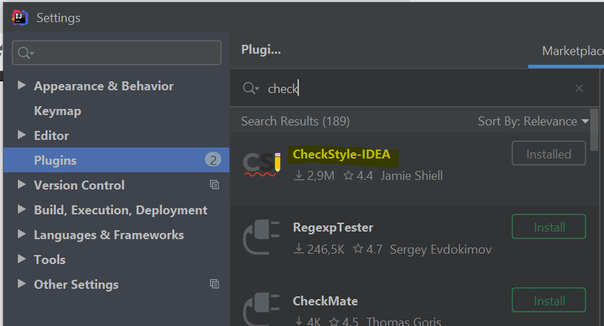

IntelliJ Setup
- At start of IntelliJ, browse to the root
pom.xmland open it as project. - Enable checkstyle:
- Install the IntelliJ CheckStyle-IDEA Plugin. It can be found via plug-in repository
(File > Settings > Plugins > Marketplace; Mac: IntelliJ IDEA > Preferences > Plugins > Marketplace).
 - Open the Settings (by pressing Ctrl + Alt + S; Mac: command + ,)
- Install the CheckStyle-IDEA Plugin, click "Apply" and restart the project upon request.
-
Repeat the previous steps for the Lombok Plugin
-
Configure Git to handle line endings
- Insert the following commands in your console:
For Windows:git config --global core.autocrlf true
For Mac/Linux:git config --global core.autocrlf input